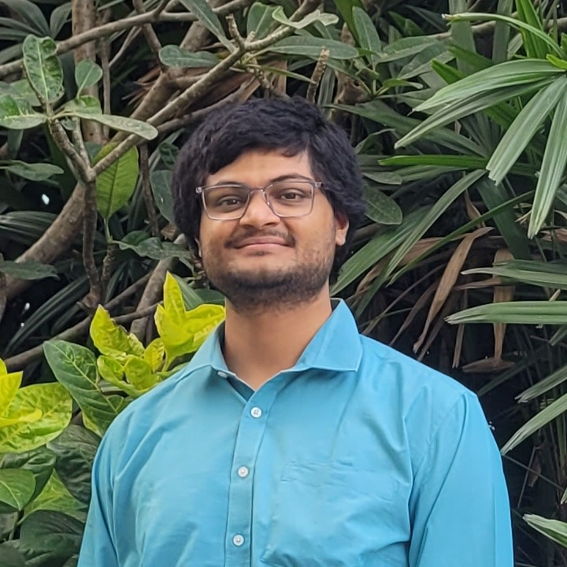
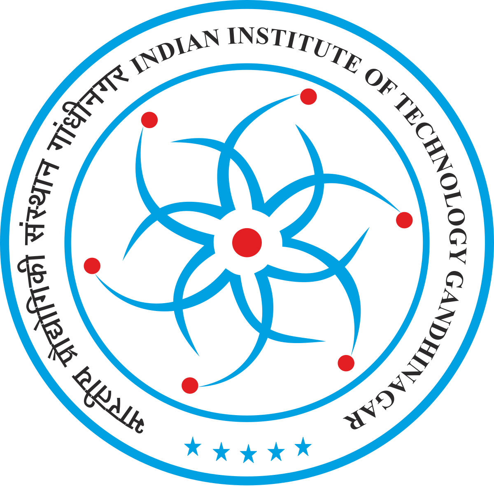
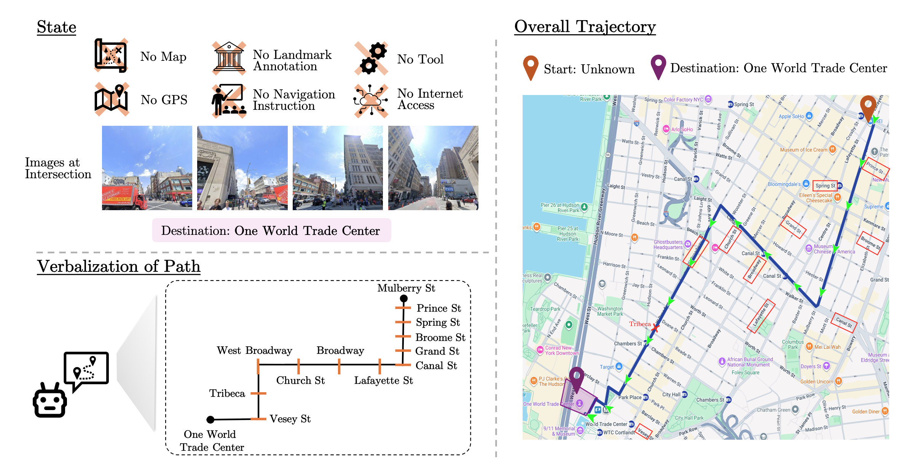
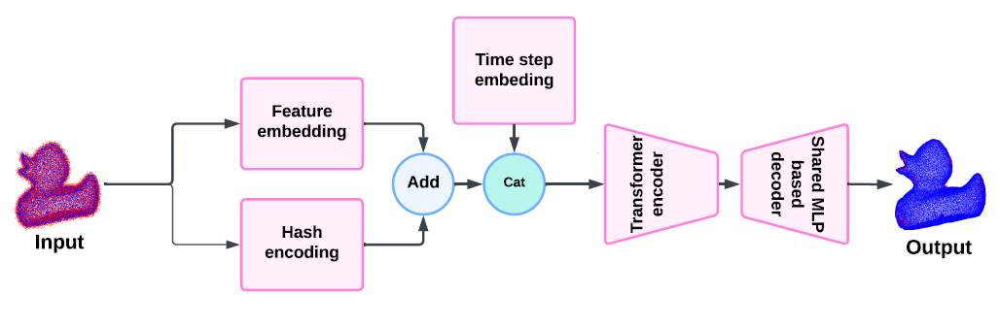
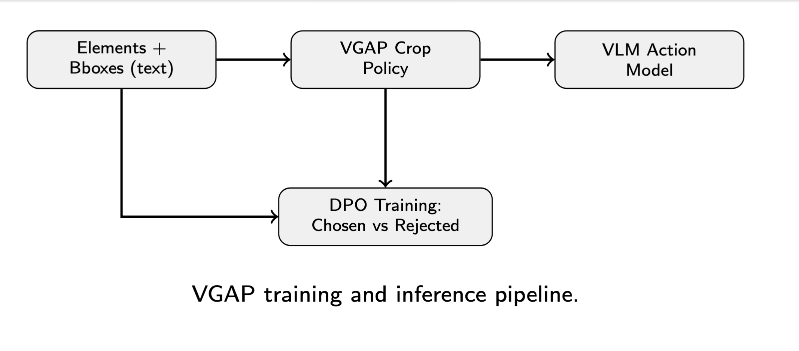
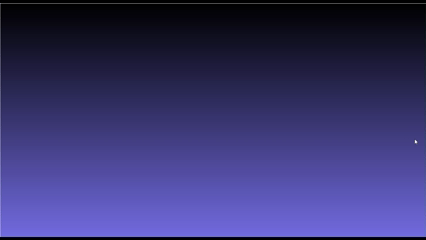
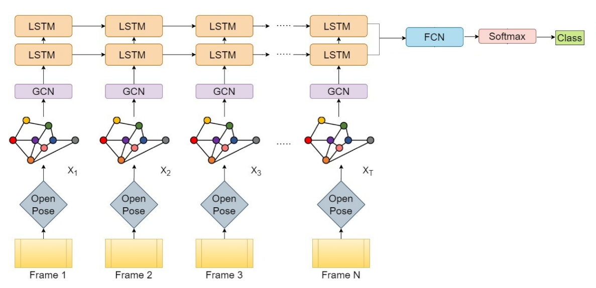
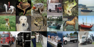

|
Utkarsh Mishra Email | Google Scholar | GitHub | LinkedIn | X |
|
Hi, I am Utkarsh Mishra, an MS student in Computer Engineering at Texas A&M University. My research interests lie in Large Language Models (LLMs), Multimodal LLMs, agentic AI systems, reinforcement learning from human feedback (RLHF), and vision-language understanding. I graduated with a B.Tech in Electrical Engineering and a minor in Computer Science from IIT Gandhinagar. Previously, I worked as a System Analyst at HDFC Bank. I'm passionate about building intelligent systems that can reason, plan, and interact with the world through multimodal understanding. Let's connect to discuss innovative ideas in these spaces! |
 |
{kind=link}
Industrial and Research Experience |
|
Research Engineer @ TAMU
Oct 2025 - Present |
Research Collaborator @ UIUC
Jan 2025 - Present |

System Analyst @ HDFC Bank
Jul 2024 - Aug 2025 |
 Research Assistant @ IIT GN
Aug 2023 - Feb 2025 |
News & Achievements
|
Publications |
|
 |
City Navigation in the Wild: Exploring Emergent Navigation from Web-Scale Knowledge in MLLMsDwip Dalal*, Utkarsh Mishra*, Narendra Ahuja, Nebojsa Jojic EACL 2026 (Oral) (*Equal contribution) Paper | Project Page |
Constructive Distortion: Improving MLLMs with Attention-Guided Image WarpingDwip Dalal, G. Vashishtha, Utkarsh Mishra, J. Kim, M. Kanda, H. Ha, Svetlana Lazebnik, Heng Ji, Unnat Jain ICLR 2026 Paper | Project Page |
|
|
 |
Transformer Augmented Multi-Resolution Hash Encoding in Diffusion Model for
3D Point Cloud Denoising
Seema Kumari, Utkarsh Mishra, Srimanta Mandal, Shanmuganathan Raman International Conference on Image Processing (ICIP) 2025 Paper A novel approach combining transformer architectures with multi-resolution hash encoding in diffusion models for effective 3D point cloud denoising. |
Projects |
|
 |
VGAP: Vision-Gated Action Planning for Web Agents
Fall 2025 - CSCE 642 Deep Reinforcement Learning, Texas A&M Code Developed a visual grounding module for autonomous web agents using Direct Preference Optimization (DPO) to train a Qwen2-0.5B model for predicting optimal screenshot crop regions. Integrated into SeeAct framework with LiteLLM support for GPT-4o, Claude, Gemini, LLaVA. |
|
Analyzing Physics Understanding in Video Generation Models
Spring 2025 - CSCE 689 Vision Foundation Models, Texas A&M Demo Page Evaluated whether video generation models (Sora, Veo3, Grok, Wan2.1) can produce physically realistic data for robotics training. Designed physics benchmark suite testing gravity, buoyancy, and collision dynamics with SAM2-based kinematics analysis. |
|
|
 |
Denoising Gaussian Splatting For 3D Scene Reconstruction
Guide: Prof. Ravi Hegde Aug 2024 - Dec 2024 Code Extended 3D Gaussian Splatting with denoising techniques (DBSCAN, point-wise distance pairing on input point cloud) and novel regularization techniques to reduce visual artifacts when using low resolution wide angle images. |

|
GAN Inversion for Latent Space Analysis
Guide: Prof. Anirban Dasgupta Jan 2024 - May 2024 Code Used GAN inversion on StyleGAN to analyze effect of object rotation on latent representation and generate novel views through latent space manipulation. |
|
 |
Human Pose Classification using Spatial-Temporal GNNs
Guide: Prof. Ravi Hegde Jan 2024 - May 2024 Code | Poster Combined Graph Convolutional Networks with LSTM to model spatial relationships and temporal dynamics for pose classification using OpenPose and AlphaPose. |
|
 |
Synthetic Data Generation for Machine Learning
Guide: Prof. Shanmuganathan Raman Aug 2023 - May 2024 Code | Poster Generated high-quality synthetic images using StyleGAN-XL and Stable Diffusion for CIFAR-10 dataset . Analyzed effects on classifier accuracy with varying synthetic to real data ratios. |
|
|
Wearable Device for Real Time Sign Language Recognition
Guide: Prof. Jhuma Saha Apr 2023 Code Developed wearable device using STM32 Nucleo microcontroller and flex sensors. Implemented USB CDC protocol with Scikit-learn MLP classifier for gesture detection. |